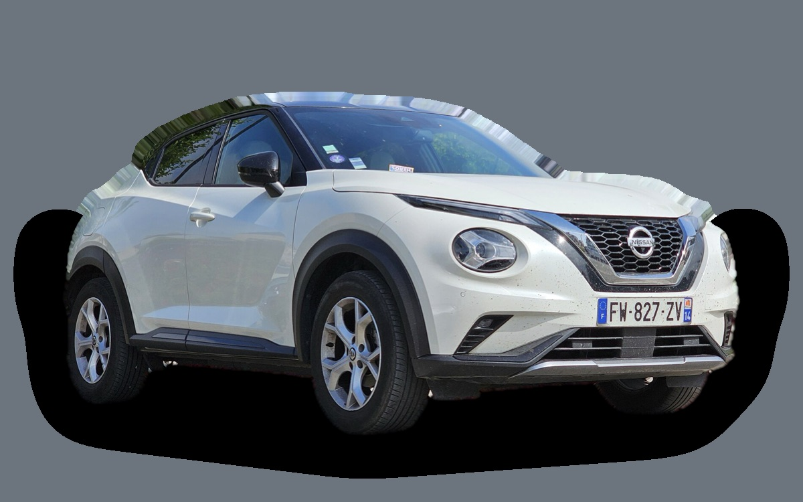
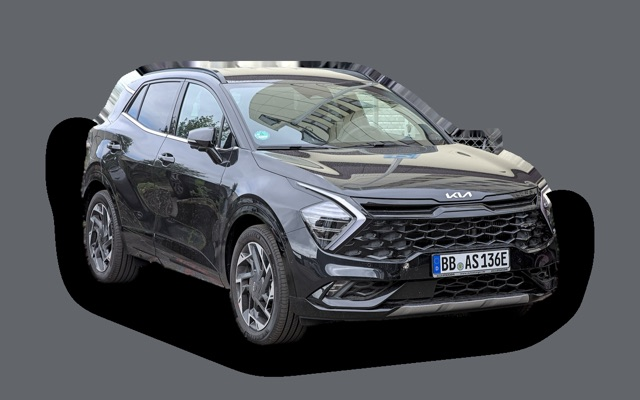

Vad kostar en Nissan Juke per månad?
En Nissan Juke från 2023 kostar cirka 3 510 kr i månaden, allt inräknat.

.jpg){kind=link}
Månadskostnad per årsmodell
| Årsmodell | Version i beräkningen | Pris | Per månad | Betyg |
|---|---|---|---|---|
| 2026 | DIG-T 114 manuell, Acenta | 257 400 kr | 4 436 kr | C |
| 2023 | DIG-T 114 manuell, Acenta | 204 000 kr | 3 510 kr | C |
| 2020 | DIG-T 114 manuell, Acenta | 143 000 kr | 3 019 kr | B |
Räknat på 5 års ägande och 1 250 mil per år, med bränslepriser från 2026-10-22. Månadskostnaden innehåller värdeminskning, drivmedel, service och reparationer, försäkring och fordonsskatt.
Så fördelas kostnaden för en 2023:a
- Värdeminskning: 1 448 kr/mån
- Drivmedel: 1 250 kr/mån
- Service och reparationer: 417 kr/mån
- Försäkring: 322 kr/mån
- Fordonsskatt: 73 kr/mån
Leasa eller köpa ny?
Nissan Privatleasing erbjuder Juke DIG-T 114 hk DCT Acenta Plus från 3 295 kr i månaden i 36 månader och 1 000 mil per år. Så mycket kostar det jämfört med att köpa samma bil ny för 273 700 kr och sälja den efter 36 månader, räknat på 1 250 mil per år och 5 procents ränta.
Leasa är billigast 438 kr mindre per månad, 15 768 kr på 36 månader.
| Per månad | Leasa | Köpa |
|---|---|---|
| Leasingavgift, 1 250 mil per år | 3 388 kr | – |
| Uppläggnings- och aviavgift | 87 kr | – |
| Värdeminskning | – | 2 681 kr |
| Ränta på pengarna, 5 % | – | 939 kr |
| Service och reparationer | ingår | 292 kr |
| Drivmedel | 1 293 kr | 1 293 kr |
| Försäkring | 427 kr | 427 kr |
| Fordonsskatt | 632 kr | 632 kr |
| Totalt per månad | 5 826 kr | 6 264 kr |
| Totalt på 36 månader | 209 736 kr | 225 504 kr |
Du kör 250 mil mer per år än erbjudandet räknar med. Uppskattat pris för fler mil: 93 kr i månaden. Nissan Privatleasing: Juke DIG-T 114 hk DCT Acenta Plus, 36 månader, 1 000 mil per år, service ingår, rörlig avgift som följer räntan. Uppläggningsavgift 995 kr och aviavgift 59 kr i månaden. Källa: nissan.se, avläst 27 oktober 2026.
Köpa: 273 700 kr för en ny bil i samma version, och 177 191 kr tillbaka när du säljer den efter 3 år. Restvärdet bygger på annonspriserna för 3 år gamla bilar, justerat för att du kör 3 750 mil på 3 år i stället för typiska 3 300 mil. Räntan är vad pengarna kostar: ränta på ett billån, eller räntan du går miste om på sparade pengar. Drivmedel, försäkring och skatt är desamma. Övermil och onormalt slitage betalas när leasingbilen lämnas tillbaka, och byter du in en köpt bil hos en handlare får du oftast mindre än annonspriset.
Räkna med din egen körsträcka och ränta · Alla leasingbilar jämförda
Begagnatpriser i annonser
| Årsmodell | Medianpris | Annonser | Typiskt miltal |
|---|---|---|---|
| 2025 | 269 000 kr | 4 | 1 300 mil |
| 2024 | 229 900 kr | 15 | 1 700 mil |
| 2023 | 199 500 kr | 5 | 3 900 mil |
| 2022 | 246 400 kr | 6 | 4 200 mil |
| 2021 | 179 800 kr | 3 | 5 200 mil |
| 2020 | 164 900 kr | 11 | 6 600 mil |
Medianpriset i svenska annonser per årsmodell i oktober 2026 (källa: Blocket, AutoUncle). Annonspriser är utgångspriser, och slutpriset kan bli lägre.
Motorer och versioner
| Motor | Drivmedel | Effekt | 0–100 km/h | Förbrukning (WLTP) | Räckvidd | Årsmodeller | Pristillägg |
|---|---|---|---|---|---|---|---|
| DIG-T 114 manuell | Bensin | 114 hk | 10,4 s | 5,8 l/100 km | – | från 2020 | – |
| DIG-T 114 DCT | Bensin | 114 hk | 10,7 s | 6 l/100 km | – | från 2020 | +17 000 kr |
| Hybrid 143 | Hybrid | 143 hk | 10,1 s | 5,1 l/100 km | – | från 2022 | +42 000 kr |
- Utrustning: Acenta, N-Connecta (+19 000 kr)
Fakta
- Kaross
- SUV
- Årsmodeller
- sedan 2020
- Nypris från
- 257 400 kr
- Bagage
- 422 liter
- Euro NCAP
- 5 av 5 stjärnor
- Nybilsgaranti
- 3 år
- Driftsäkerhet
- 3,5 av 5
- Helförsäkring, uppskattning
- 5 300 kr/år
- Service, uppskattning
- 3 400 kr/år
Fördelar och nackdelar
Fördel
Personlig design och prisvärd hybrid.
Nackdel
Litet baksäte och stötig fjädring.
Liknande bilar
 Hyundai Kona3 477 kr/mån som 2023:a
Hyundai Kona3 477 kr/mån som 2023:a
Kia Sportage3 545 kr/mån som 2023:a Volkswagen ID.43 556 kr/mån som 2023:a
Volkswagen ID.43 556 kr/mån som 2023:a Toyota bZ4X3 464 kr/mån som 2023:a
Toyota bZ4X3 464 kr/mån som 2023:a Kia XCeed3 461 kr/mån som 2023:a
Kia XCeed3 461 kr/mån som 2023:a Ford Puma3 560 kr/mån som 2023:a
Ford Puma3 560 kr/mån som 2023:a
Uppdaterad 2026-10-27 · annonsdata okt 2026